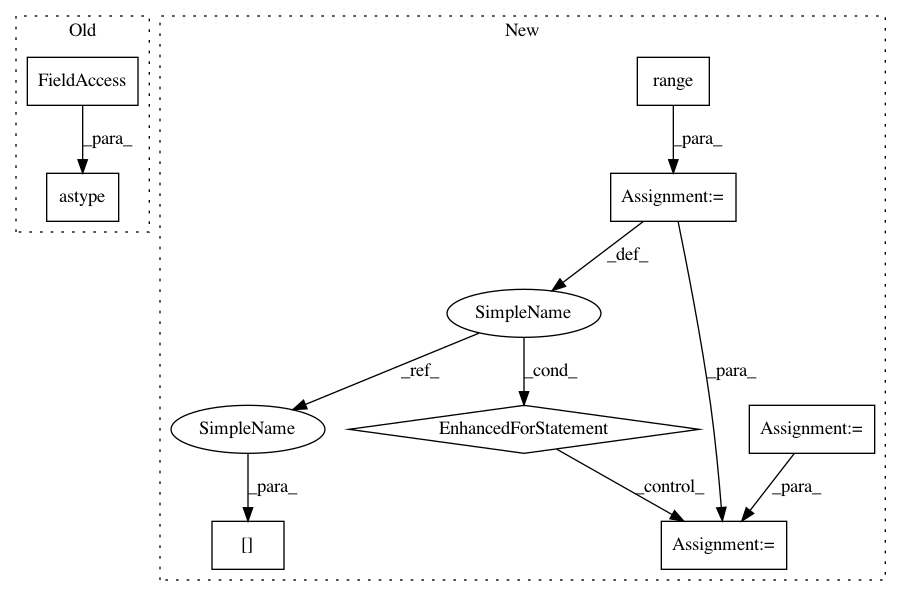

0da323fc9e612174fd05d5bc59a0fd6e8c4a5da9,dipy/reconst/tests/test_shore_metrics.py,,test_shore_metrics,#,14
Before Change
angl = [(0, 0), (60, 0)]
S, sticks = MultiTensor(gtab, mevals, S0=100, angles=angl,
fractions=[50, 50], snr=None)
S = S / S[0, None].astype(np.float)
radial_order = 8
zeta = 700
lambdaN = 1e-12
After Change
assert_almost_equal(nmse_signal, 0.0, 4)
// test if the analytical integral of the pdf is equal to one
integral = 0
for n in range((radial_order)/2 +1):
integral += c_shore[n] * (np.pi**(-1.5) * zeta **(-1.5) * genlaguerre(n,0.5)(0)) ** 0.5
assert_almost_equal(integral, 1.0, 10)
// test if the integral of the pdf canculated on a discrete grid is equal to one
pdf_discrete = asmfit.pdf_grid(17, 40e-3)
In pattern: SUPERPATTERN
Frequency: 3
Non-data size: 8
Instances
Project Name: nipy/dipy
Commit Name: 0da323fc9e612174fd05d5bc59a0fd6e8c4a5da9
Time: 2013-12-13
Author: mauro.zucchelli88@gmail.com
File Name: dipy/reconst/tests/test_shore_metrics.py
Class Name:
Method Name: test_shore_metrics
Project Name: deeptools/HiCExplorer
Commit Name: e8a8edec508fcf886d5c6329ff0729b1cff845e8
Time: 2018-09-04
Author: wolffj@informatik.uni-freiburg.de
File Name: hicexplorer/utilities.py
Class Name:
Method Name: exp_obs_matrix_norm
Project Name: scikit-image/scikit-image
Commit Name: a346268a461ef2a403ed8e8da6e9e446c741e75b
Time: 2017-10-25
Author: jni.soma@gmail.com
File Name: skimage/measure/_moments.py
Class Name:
Method Name: moments_normalized